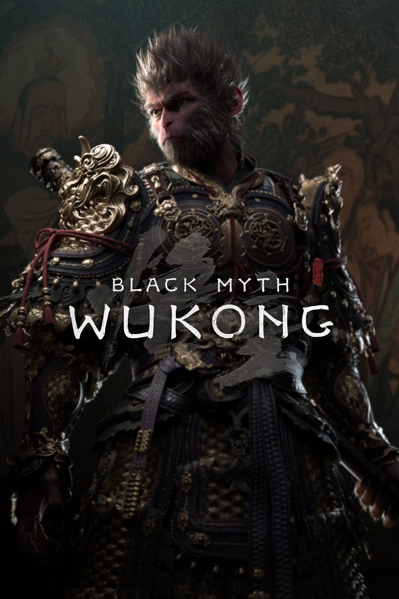

GUIA DE CONQUISTAS
Black Myth: Wukong

Sobre o jogo
Guia de platina organizado por capítulos, exploração, personagens, colecionáveis, objetivos especiais e New Game+.
Dificuldade: 5/10 · Tempo estimado: 40–60 horas · Troféus: 36 (1 platina, 4 ouro, 9 prata e 22 bronze) · Jogadores: 1
Organização dos troféus
Lista de referência: 36 (1 platina, 4 ouro, 9 prata e 22 bronze).
A página apresenta o total e a distribuição geral informados para esta lista. A relação individual de nomes e descrições poderá ser adicionada em uma atualização posterior.
📌 Ordem recomendada
1️⃣ História principal
- Complete o prólogo e avance pelos seis capítulos.
- Explore as regiões disponíveis e descubra seus pontos de interesse.
- Conheça os personagens secundários e complete as missões principais.
- Avance pela história até o confronto final.
2️⃣ Chefes e encontros especiais
- Registre os encontros principais e opcionais encontrados durante a exploração.
- Descubra áreas relacionadas a encontros secretos.
- Confira os objetivos associados aos encontros especiais sem deixar regiões opcionais inexploradas.
3️⃣ Exploração e segredos
- Explore todas as regiões disponíveis.
- Descubra áreas secretas e santuários.
- Complete as missões secundárias acessíveis em cada capítulo.
- Verifique os locais especiais e os objetivos de exploração.
4️⃣ Personagens e missões secundárias
- Converse com o NPC Cavalo nos capítulos em que estiver disponível.
- Esgote as opções de diálogo antes de avançar para a etapa seguinte da história.
- Converse com o Ancião em cada capítulo em que aparecer e esgote as opções de diálogo.
- Complete as missões secundárias disponíveis e confira os registros relacionados aos personagens.
5️⃣ Colecionáveis e registros
- Colete todas as bebidas e recipientes necessários aos registros.
- Complete a coleção de espíritos e descubra as transformações registráveis.
- Colete receitas e complete os registros de personagens.
- Confira os itens de coleção e os objetivos de fabricação.
6️⃣ Objetivos especiais
- Complete os objetivos de progressão relacionados às habilidades e magias.
- Complete os registros de inimigos exigidos pela lista de troféus.
- Verifique os objetivos de armaduras, itens especiais e fabricação.
- Confira os requisitos de conclusão total.
7️⃣ Final alternativo
- Complete os requisitos necessários para acessar as áreas secretas.
- Conclua os objetivos das regiões ocultas.
- Verifique os requisitos da conclusão alternativa e os troféus relacionados aos finais.
8️⃣ New Game+
- Inicie o New Game+ após concluir a primeira jornada.
- Complete os objetivos exclusivos da segunda campanha.
- Confira os registros, itens e melhorias que ainda faltam.
- Conclua os requisitos específicos do New Game+.
9️⃣ Limpeza final
- Confira os registros de personagens e os colecionáveis restantes.
- Verifique os objetivos de fabricação e os itens de coleção.
- Complete os troféus pendentes e desbloqueie a platina.
Avisos sobre objetivos perdíveis
- Alguns objetivos ligados a personagens e diálogos podem ser perdidos se a história avançar sem concluir as interações necessárias.
- Converse com o NPC Cavalo e com o Ancião em cada capítulo em que estiverem disponíveis, esgotando os diálogos antes de avançar.
- Há itens e registros específicos que exigem atenção durante a exploração; confira o progresso antes de encerrar cada capítulo.
- Após o confronto final, escolha continuar a jornada caso queira concluir atividades restantes no mesmo ciclo, quando essa opção estiver disponível.
Use esta seção como conferência antes de avançar em capítulos, decisões ou etapas irreversíveis.
Colecionáveis e objetivos secundários
- Bebidas e recipientes.
- Espíritos e transformações registráveis.
- Receitas e registros de personagens.
- Armaduras, itens especiais e materiais relacionados aos objetivos de fabricação.
← Voltar à biblioteca